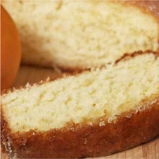
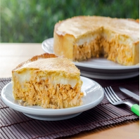

2 xícaras (chá) de açúcar
3 xícaras (chá) de farinha de trigo
4 colheres (sopa) de margarina
1 e 1/2 xícara (chá) de leite
1 colher (sopa) bem cheia de fermento em pó
Bata as claras em neve e reserve
Misture as gemas, a margarina e o açúcar até obter uma massa homogênea
Por último, adicione as claras em neve e o fermento
Despeje a massa em uma forma grande de furo central untada e enfarinhada
Asse em forno médio 180 °C, preaquecido, por aproximadamente 40 minutos ou ao furar o bolo com um garfo, este saia limpo
500 g de peito de frango sem pele
1/2 litro de caldo de galinha
4 colheres (sopa) de óleo
1 dente de alho amassado
1 cebola picada
3 tomates sem pele e sem sementes
1 xicara (chá) de ervilhas
sal e pimenta-do-reino a gosto
250 ml
3/4 de xicara (cha) de óleo
2 ovos
1 e 1/2 xicaras (cha) de farinha de trigo
sal a gosto
1 colher (sopa) de fermento em pó
queijo ralado a gosto
Cozinhe o peito de frango no caldo até ficar macio
Separe 1 xícara (chá) de caldo do cozimento e reserve
Refogue os demais ingredientes e acrescente as ervilhas por último
Desfie o frango, misture ao caldo e deixe cozinhar até secar
Bata o leite, o óleo e os ovos no liquidificador em velocidade baixa
Acrescente aos poucos a farinha, o sal e o fermento
Despeje metade da massa em uma forma untada e adicione o recheio sobre ela
Cubra com o restante de massa e o queijo ralado
Leve ao forno preaquecido (180° C) até dourar
